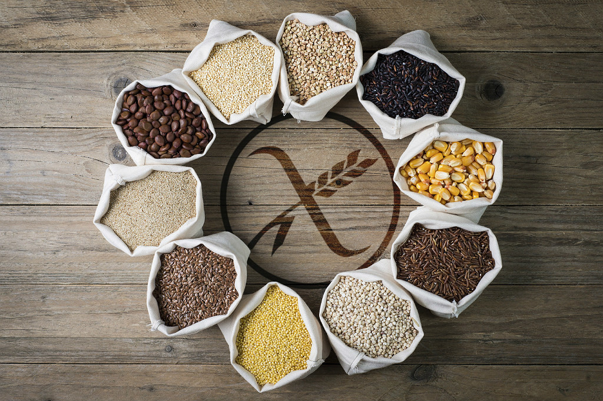

La enfermedad celíaca es una afección autoinmune que daña al revestimiento del intestino delgado. Este daño proviene de una reacción a la ingestión de gluten. Esta es una sustancia que se encuentra en el trigo, la cebada, el centeno y posiblemente la avena.
En esta pagina encontraras informacion, tips y recetas para llevar una vida libre de gluten
